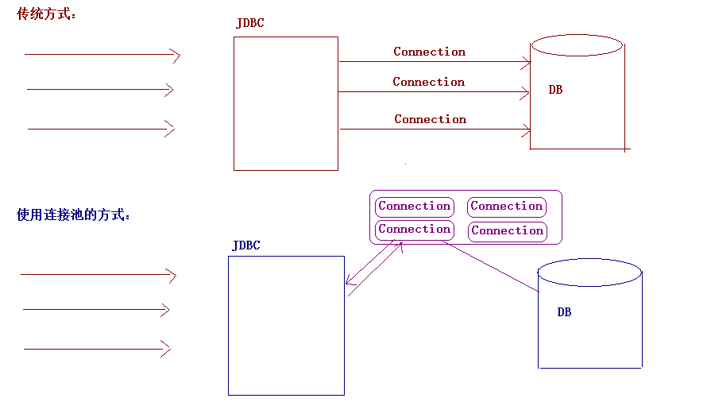

02-连接池与SpringJDBC介绍一. 今日目标二. 今日内容(一) 数据库连接池1. 连接池概念2. 连接池好处3. 自定义连接池实现步骤:代码实现测试代码(二) 开源连接池1. C3P0连接池基本步骤代码实现：java代码配置文件c3p0-config.xml使用c3p0连接池改写工具类编写工具类JdbcUtils3.java测试工具类2. Druid连接池基本步骤代码实现java代码配置文件druid.properties使用Druid连接池重写工具类编写工具类JdbcUtils2.java测试工具类(三) SpringJDBC使用使用步骤入门代码案例练习三. 作业练习
x其实就是一个容器(集合)，存放数据库连接的容器。当系统初始化好后，容器被创建，容器中会申请一些连接对象，当用户来访问数据库时，从容器中获取连接对象，用户访问完之后，会将连接对象归还给容器。

xxxxxxxxxx1. 节约资源2. 用户访问高效
xxxxxxxxxx1. 步骤一:编写一个类实现DataSource接口2. 步骤二:重写getConnection方法3. 步骤三:初始化多个连接在内存中4. 步骤四:编写归还连接的方法
xxxxxxxxxxpublic class MyDataSource implements DataSource { //初始化一些连接对象放到内存中，使用集合来装Connection对象，在构造方法中初始化 private List<Connection> list=new ArrayList<Connection>(); public DefinedDataSource() { //初始化3个连接方法list集合中，存到内存。 for (int i = 0; i < 3; i++) { try { list.add(JDBCUtils.getConnection()); } catch (ClassNotFoundException e) { e.printStackTrace(); } catch (SQLException e) { e.printStackTrace(); } } } public Connection getConnection() throws SQLException { //要从集合中移除，否则还在集合中，所以使用get（）方法不可行 return list.remove(0); } //对外提供一个归还连接对象的方法 public void addBack(Connection connection){ list.add(connection); } ......}xxxxxxxxxxpublic void test1() { Connection connection=null; PreparedStatement pstmt=null; ResultSet resultSet = null; //1、创建连接池对象 DefinedDataSource dataSource = new DefinedDataSource(); try { //2、获取连接 connection = dataSource.getConnection(); //3、获取preparedStatement对象，预编译sql语句 pstmt = connection.prepareStatement("select * from account"); //4、设置参数 //5、执行sql语句或处理结果 resultSet = pstmt.executeQuery(); while (resultSet.next()) { System.out.println(resultSet.getInt("id")+" "+resultSet.getString("name")+" "+resultSet.getDouble("money")); } } catch (SQLException e) { e.printStackTrace(); }finally { //6、释放资源 if (resultSet!=null) { try { resultSet.close(); } catch (SQLException e) { e.printStackTrace(); } resultSet=null; } if (pstmt!=null) { try { pstmt.close(); } catch (SQLException e) { e.printStackTrace(); } pstmt=null; } //回收Connection对象 if (connection!=null) { dataSource.addBack(connection); } }}xxxxxxxxxx我们一般不会自己写连接池，市面上有很多优秀的开源连接池供我们使用1. C3P0：数据库连接池技术2. Druid：数据库连接池实现技术，由阿里巴巴提供的
xxxxxxxxxx1. 导入jar包 (两个) c3p0-0.9.5.2.jar mchange-commons-java-0.2.12.jar ，* 不要忘记导入数据库驱动jar包2. 定义配置文件：* 名称： c3p0.properties 或者 c3p0-config.xml* 路径：直接将文件放在src目录下即可。3. 创建核心对象 数据库连接池对象 ComboPooledDataSource4. 获取连接： getConnection
xxxxxxxxxx public void test1() throws SQLException { //1. 创建连接池对象 --- 会自动的加载配置文件 c3p0-config.xml ComboPooledDataSource ds = new ComboPooledDataSource(); //2. 获取连接 Connection connection = ds.getConnection(); //3.定义sql语句 String sql = "select * from student "; //4.获取执行sql的对象 Statement Statement stmt = connection.createStatement(); //5.执行sql ResultSet rs = stmt.executeQuery(sql); //6.处理结果 while(rs.next()){ System.out.println(rs.getObject("name")+" "+rs.getObject("age")); } //7.释放资源 JdbcUtils.close(rs,stmt,connection); }c3p0-config.xmlxxxxxxxxxx <c3p0-config> <default-config> <property name="driverClass">com.mysql.jdbc.Driver</property> <property name="jdbcUrl">jdbc:mysql://localhost:3306/web05</property> <property name="user">root</property> <property name="password">zl</property> <!-- 其他设置 --> <!-- 连接超时设置30秒 --> <property name="checkoutTimeout">3000</property> <!-- 30秒检查一次connection的空闲 --> <property name="idleConnectionTestPeriod">30</property> <!--初始化的池大小 --> <property name="initialPoolSize">2</property> <!-- 最多的一个connection空闲时间 --> <property name="maxIdleTime">30</property> <!-- 最多可以有多少个连接connection --> <property name="maxPoolSize">5</property> <!-- 最少的池中有几个连接 --> <property name="minPoolSize">2</property> <!-- 批处理的语句 --> <property name="maxStatements">50</property> <!-- 每次增长几个连接 --> <property name="acquireIncrement">3</property> </default-config></c3p0-config>
* 注意:
1. 配置文件的名字一定是 c3p0-config.xml
2. 配置文件一定放在src路径下
3. 配置文件中的属性名称一定要正确
JdbcUtils3.javaxxxxxxxxxxpackage com.itheima.utils;import com.mchange.v2.c3p0.ComboPooledDataSource;import javax.sql.DataSource;import java.sql.Connection;import java.sql.ResultSet;import java.sql.SQLException;import java.sql.Statement;public class JdbcUtils3 { private static DataSource ds = new ComboPooledDataSource(); /** * 获取连接 * @return * @throws SQLException */ public static Connection getConnection() throws SQLException { return ds.getConnection(); } /** * 获取数据库连接池 * @return */ public static DataSource getDataSource(){ return ds; } /** * 释放资源 * * @param stmt * @param conn */ public static void close(ResultSet rs, Statement stmt, Connection conn) { if (rs != null) { try { rs.close(); } catch (SQLException e) { e.printStackTrace(); } } if (stmt != null) { try { stmt.close(); } catch (SQLException e) { e.printStackTrace(); } } if (conn != null) { try { conn.close(); } catch (SQLException e) { e.printStackTrace(); } } }}xxxxxxxxxx public void test2() throws SQLException { //1. 获取连接 Connection connection = JdbcUtils3.getConnection(); //2.定义sql语句 String sql = "select * from student "; //3.获取执行sql的对象 Statement Statement stmt = connection.createStatement(); //4.执行sql ResultSet rs = stmt.executeQuery(sql); //5.处理结果 while(rs.next()){ System.out.println(rs.getObject("name")+" "+rs.getObject("age")); } //6.释放资源 JdbcUtils.close(rs,stmt,connection); }xxxxxxxxxx1. 导入jar包 `druid-1.0.9.jar`2. 定义配置文件：* 是properties形式的* 可以叫任意名称，可以放在任意目录下3. 加载配置文件。Properties4. 获取数据库连接池对象：通过工厂来来获取 `DruidDataSourceFactory`5. 获取连接：`getConnection()`
xxxxxxxxxxpublic void test1() throws Exception { //1. 加载配置文件 Properties properties = new Properties(); properties.load(DruidDataSourceTest.class.getClassLoader().getResourceAsStream("druid.properties")); // 2. 创建数据库连接池 DataSource ds = DruidDataSourceFactory.createDataSource(properties); //3. 获取连接 Connection connection = ds.getConnection(); //4.定义sql语句 String sql = "select * from student "; //4.获取执行sql的对象 Statement Statement stmt = connection.createStatement(); //5.执行sql ResultSet rs = stmt.executeQuery(sql); //6.处理结果 while(rs.next()){ System.out.println(rs.getObject("name")+" "+rs.getObject("age")); } //7.释放资源 JdbcUtils.close(rs,stmt,connection);}druid.propertiesxxxxxxxxxx# 连接设置driverClassName=com.mysql.jdbc.Driverurl=jdbc:mysql://localhost:3306/web05username=rootpassword=zl# 初始化连接initialSize=10#最大连接数量maxActive=50# 最大空闲连接maxIdle=20# 最小空闲连接minIdle=5# 超时等待时间以毫秒为单位 6000毫秒/1000等于60秒maxWait=60000
JdbcUtils2.javaxxxxxxxxxxpackage com.itheima.utils;import com.alibaba.druid.pool.DruidDataSourceFactory;import com.itheima.druid.DruidDataSourceTest;import javax.sql.DataSource;import java.sql.Connection;import java.sql.ResultSet;import java.sql.SQLException;import java.sql.Statement;import java.util.Properties;public class JdbcUtils2 { private static DataSource ds ; static { try { //1. 加载配置文件 Properties properties = new Properties(); properties.load(JdbcUtils2.class.getClassLoader().getResourceAsStream("druid.properties")); // 2. 创建数据库连接池 ds = DruidDataSourceFactory.createDataSource(properties); } catch (Exception e) { e.printStackTrace(); } } /** * 获取连接 * @return * @throws SQLException */ public static Connection getConnection() throws SQLException { return ds.getConnection(); } /** * 获取数据库连接池 * @return */ public static DataSource getDataSource(){ return ds; } /** * 释放资源 * * @param stmt * @param conn */ public static void close(ResultSet rs, Statement stmt, Connection conn) { if (rs != null) { try { rs.close(); } catch (SQLException e) { e.printStackTrace(); } } if (stmt != null) { try { stmt.close(); } catch (SQLException e) { e.printStackTrace(); } } if (conn != null) { try { conn.close(); } catch (SQLException e) { e.printStackTrace(); } } }}xxxxxxxxxxpublic void test2() throws SQLException { //1. 获取连接 Connection connection = JdbcUtils2.getConnection(); //2.定义sql语句 String sql = "select * from student "; //3.获取执行sql的对象 Statement Statement stmt = connection.createStatement(); //4.执行sql ResultSet rs = stmt.executeQuery(sql); //5.处理结果 while(rs.next()){ System.out.println(rs.getObject("name")+" "+rs.getObject("age")); } //6.释放资源 JdbcUtils.close(rs,stmt,connection);}xxxxxxxxxxSpring框架对JDBC的简单封装。提供了一个`JDBCTemplate`对象简化JDBC的开发
xxxxxxxxxx1. 导入jar包2. 创建JdbcTemplate对象。依赖于数据源DataSource* JdbcTemplate template = new JdbcTemplate(ds);3. 调用JdbcTemplate的方法来完成CRUD的操作* update():执行DML语句。增、删、改语句* queryForMap():查询结果将结果集封装为map集合，将列名作为key，将值作为value 将这条记录封装为一个map集合* 注意：这个方法查询的结果集长度只能是1* queryForList():查询结果将结果集封装为list集合* 注意：将每一条记录封装为一个Map集合，再将Map集合装载到List集合中* query():查询结果，将结果封装为JavaBean对象* query的参数：RowMapper* 一般我们使用BeanPropertyRowMapper实现类。可以完成数据到JavaBean的自动封装* new BeanPropertyRowMapper<类型>(类型.class)* queryForObject：查询结果，将结果封装为对象* 一般用于聚合函数的查询
xxxxxxxxxxpublic void test1(){ //1. 创建JdbcTemplate对象 JdbcTemplate jt = new JdbcTemplate(JdbcUtils3.getDataSource()); //2. 编写sql语句 String sql = "insert into `student` values (null ,'马小云',25,'女','北京',100,100)"; int row = jt.update(sql); if(row>0){ System.out.println("插入成功...."); }else{ System.out.println("插入失败...."); }}xxxxxxxxxxpublic class JdbcTemplateDemo2 { //Junit单元测试，可以让方法独立执行 //1. 获取JDBCTemplate对象 private JdbcTemplate template = new JdbcTemplate(JDBCUtils.getDataSource()); /** * 1. 修改1号数据的 salary 为 10000 */ public void test1(){ //2. 定义sql String sql = "update emp set salary = 10000 where id = 1001"; //3. 执行sql int count = template.update(sql); System.out.println(count); } /** * 2. 添加一条记录 */ public void test2(){ String sql = "insert into emp(id,ename,dept_id) values(?,?,?)"; int count = template.update(sql, 1015, "郭靖", 10); System.out.println(count); } /** * 3.删除刚才添加的记录 */ public void test3(){ String sql = "delete from emp where id = ?"; int count = template.update(sql, 1015); System.out.println(count); } /** * 4.查询id为1001的记录，将其封装为Map集合 * 注意：这个方法查询的结果集长度只能是1 */ public void test4(){ String sql = "select * from emp where id = ? or id = ?"; Map<String, Object> map = template.queryForMap(sql, 1001,1002); System.out.println(map); //{id=1001, ename=孙悟空, job_id=4, mgr=1004, joindate=2000-12-17, salary=10000.00, bonus=null, dept_id=20} } /** * 5. 查询所有记录，将其封装为List */ public void test5(){ String sql = "select * from emp"; List<Map<String, Object>> list = template.queryForList(sql); for (Map<String, Object> stringObjectMap : list) { System.out.println(stringObjectMap); } } /** * 6. 查询所有记录，将其封装为Emp对象的List集合 */ public void test6(){ String sql = "select * from emp"; List<Emp> list = template.query(sql, new RowMapper<Emp>() { public Emp mapRow(ResultSet rs, int i) throws SQLException { Emp emp = new Emp(); int id = rs.getInt("id"); String ename = rs.getString("ename"); int job_id = rs.getInt("job_id"); int mgr = rs.getInt("mgr"); Date joindate = rs.getDate("joindate"); double salary = rs.getDouble("salary"); double bonus = rs.getDouble("bonus"); int dept_id = rs.getInt("dept_id"); emp.setId(id); emp.setEname(ename); emp.setJob_id(job_id); emp.setMgr(mgr); emp.setJoindate(joindate); emp.setSalary(salary); emp.setBonus(bonus); emp.setDept_id(dept_id); return emp; } }); for (Emp emp : list) { System.out.println(emp); } } /** * 6. 查询所有记录，将其封装为Emp对象的List集合 */ public void test6_2(){ String sql = "select * from emp"; List<Emp> list = template.query(sql, new BeanPropertyRowMapper<Emp>(Emp.class)); for (Emp emp : list) { System.out.println(emp); } } /** * 7. 查询总记录数 */ public void test7(){ String sql = "select count(id) from emp"; Long total = template.queryForObject(sql, Long.class); System.out.println(total); }} 使用Spring Jdbc完成如下功能:
xxxxxxxxxxCREATE TABLE `tab_user` ( `uid` int(11) NOT NULL PRIMARY KEY AUTO_INCREMENT, `username` varchar(100) NOT NULL, `password` varchar(32) NOT NULL, `name` varchar(100) , `birthday` date , `sex` char(1) , `telephone` varchar(11) , `email` varchar(100) , `balance` double ) ;INSERT INTO `tab_user` VALUES ('1', 'aaaa', '123', '李逵', '2000-01-01', '男', '11111111', 'aaa@qq.com', 10000);INSERT INTO `tab_user` VALUES ('4', 'aaaaa', '123', '李逵', '2000-01-01', '男', '11111111', 'aaa@qq.com', 10000);INSERT INTO `tab_user` VALUES ('5', 'aaaaaa', '123', '李逵', '2000-01-01', '男', '11111111', 'wanglei@itcast.cn', 10000);INSERT INTO `tab_user` VALUES ('6', 'bbbbbbbbbb', 'bbbbbbbbbbb', '王磊', '2018-10-23', '男', '15910101111', 'wanglei@itcast.cn', 10000);1. 封装一个查询所有用户信息的方法
xxxxxxxxxxpublic List<User> findAll();2. 封装一个根据用户id查询用户详情的方法
xxxxxxxxxxpublic User findById(int id);3. 封装一个添加用户的方法
xxxxxxxxxxpublic void add(User user);4. 封装一个根据用户名和密码查询用户的方法
xxxxxxxxxxpublic User login(String username,String password);5. 封装一个转账的方法,传入转出账户id和转入账户id以及金额,完成转账功能
xxxxxxxxxxpublic boolean transfer(int source,int target,double money);6.封装一个更新用户信息的方法,传入用户对象,根据id更新数据
xxxxxxxxxxpublic boolean update(User user);7.封装一个根据邮箱和姓名搜索用户的方法
xxxxxxxxxx// user中可能会有用户姓名也可能会有用户邮箱,也可能二个都有public List<User> search(User user);